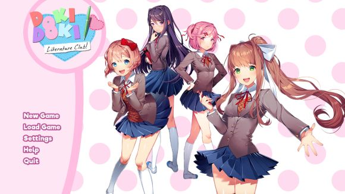
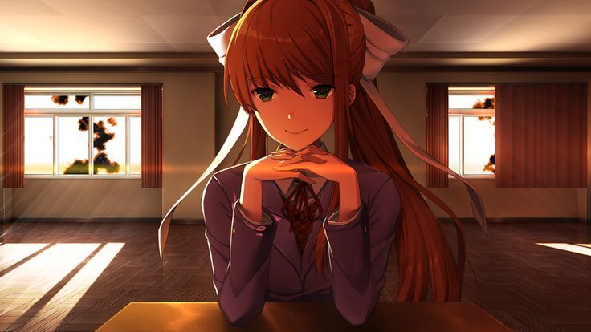

Doki Doki Literature Club: Trauma Berkedok Anime Cute!
Analisis oleh Ika • Klub Sastra Korban Monika
Jangan pernah tertipu sama impresi awal game ini! Pas pertama main, lo bakal disuguhin visual novel simulasi kencan biasa yang isinya cewek-cewek anime imut penyuka puisi. Tapi begitu masuk pertengahan game... DDLC langsung berubah jadi game psikologis horor paling jenius yang pernah ada.

💔 POIN RATING: KASIH BINTANG 4 SOALNYA GUE MASIH TRAUMA & KASIAN BANGET SAMA SAYORI! JOINT THE CLUB THEY SAID, IT WILL BE FUN THEY SAID... 💔
📖 Lore & Kegilaan Monika (The Ultimate Hacker)
Plot twist terbesar DDLC adalah konsep Breaking the Fourth Wall (menembus dinding pembatas antara game dan pemain dunia nyata). Game ini bener-bener sadis karena:
Monika Sentient Sentimental: Monika, sang ketua klub, sadar kalau diri dia hanyalah karakter di dalam sebuah game komputer. Dia tahu dia gak punya rute kencan buat dapetin cinta si pemain (lo).
Manipulasi File .chr: Karena cemburu sama karakter lain, Monika mulai nge-hack coding game-nya sendiri. Dia sengaja nge-amplify sifat buruk/depresi dari Sayori, Yuri, dan Natsuki biar mereka bertingkah aneh dan berakhir mengenaskan, sehingga lo terpaksa cuma punya pilihan buat sama Monika doang (Just Monika).
Beneran Ngapus File: Di Act 3, game ini bakal nge-stuck di satu ruangan hampa bareng Monika selamanya. Cara buat namatinnya gila banget: Lo harus buka folder instalasi game DDLC di laptop lo secara nyata, lalu menghapus file monika.chr secara manual! Jenius parah!

📝 Anggota Klub Sastra (Korban & Pelaku)
Biar makin paham seberapa tragisnya manipulasi Monika, ini dia profil singkat dan sifat asli para anggota klub sebelum game-nya mulai rusak:
Sayori (The Sunshine Bullet): Teman masa kecil kita yang super ceria, ceroboh, dan selalu berusaha bikin semua orang bahagia. Sayori adalah tipe karakter yang menyembunyikan depresi berat di balik senyum lebar sehari-harinya. Pas Monika memperparah depresinya di Act 1, dunianya langsung runtuh, bikin scene akhir Act 1 jadi salah satu tragedi paling ikonik di dunia game. Huhu, still hurts... 💔
Natsuki (The Tsundere Baker): Anggota paling kuntet yang hobi baca manga di pojokan kelas dan jago banget bikin kue mangkok (cupcake) unyu. Sifatnya tsundere klasik: galak dan judes di luar, tapi aslinya perhatian banget kalau udah kenal dekat. Di balik sifatnya, dia punya masalah keluarga tersembunyi yang bikin dia nyari pelarian ke klub sastra. 🍦
Yuri (The Elegant Bookworm): Wakil ketua klub yang paling dewasa, pemalu, anggun, dan suka baca buku novel fantasi tebal. Yuri punya hobi mengoleksi pisau hias dan punya kecenderungan menyakiti diri sendiri (self-harm). Pas kodingan sifatnya dirusak sama Monika di Act 2, rasa sukanya berubah jadi obsesi yandere yang super menyeramkan sampai matanya jadi hiperaktif! 👁️🔪
Monika (The Omnipotent President): Ketua klub sastra yang perfeksionis, pinter, populer, dan awalnya kelihatan paling normal serta dewasa. Plot twist-nya, dialah sang antagonis utama. Karena dia sadar kalau dia cuma karakter game yang gak dikasih rute kencan, Monika nekat menghapus teman-temannya sendiri demi bisa berduaan sama lo di balik layar komputer. 🟩⌨️
⭐ Kesimpulan Akhir
DDLC adalah pembuktian kalau game horor gak melulu soal *jumpscare* monster jelek. Horor psikologis yang memanfaatkan file sistem komputer ini bener-bener jenius. Tapi ya itu tadi... plot tragis yang menimpa Sayori di akhir Act 1 bakal membekas selamanya di hati. Rating dari gue: 9/10 (Minus 1 bintang murni karena kasihan Sayori, huhu).